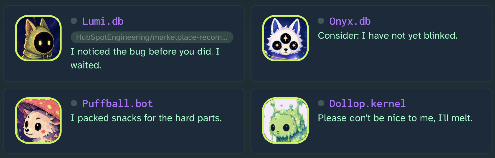
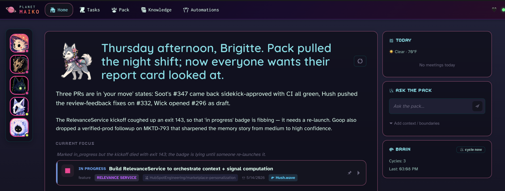
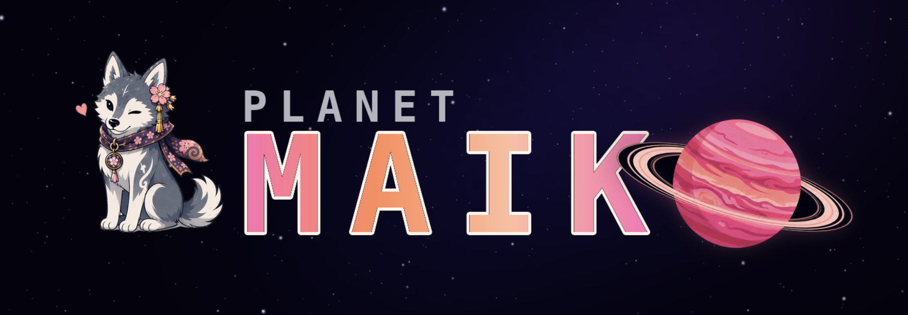
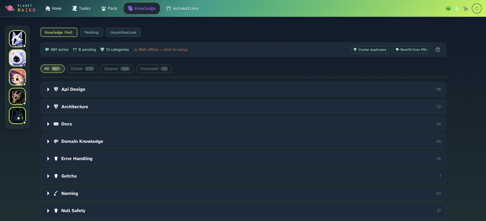

Planet Maiko
These dogs want to live in your computer, which is a strange thing for software to do. Let them in?



screenshot. captured by something that was here first.
We live in strange times, and yet our dev tools are so painfully un-strange. No one knows what being a software engineer will be like in a year, or even a month. If we are all headed to our own inevitable obsolescence, we might as well have fun.

// the tech is folded up. click a bar to read it.
// learn these six. the rest is weather.
Maiko shuffles data between a few core concepts. Knowing which is which makes every page legible.
Things to notice. Notifications from your pollers (GitHub, Linear, Calendar, PagerDuty) plus internal events. The brain cycle triages them into everything below.
Things to finish. Typed in, created from actionable pupdates, or spawned by automation rules. An agent can be assigned.
Your pack. Characters with a name, an avatar, a role, and a scope. They run in isolated git worktrees with their own CLAUDE.md.
Tribal knowledge your agents inherit. Short notes like "the CLI test runner is broken, use the IDE." Approved ones inject into every new agent.
Coding rules, retrieved when relevant. Extracted from your PR review history. Review agents pull only the ones relevant to the diff in front of them, so you can keep a pool of hundreds of very specific nits and gotchas without drowning every prompt.
when → then rules. "When a PR I'm tagged on goes stale, leave me a memo." No model in the trigger layer, just predicates.
// hand off a task, read a diff, never open a terminal
Assign an agent and Maiko prepares a git worktree with TASK.md, a CLAUDE.md (role protocol, character, active team insights), and the project's MCPs. Siblings never step on each other.
The agent commits to its branch and calls maiko reply from inside the worktree. Talk-back is shell, not MCP, so the same loop runs under headless Claude, interactive Claude in tmux, or a local model.
Read the diff, leave inline comments, approve or request changes. Request changes and the agent auto-wakes, reads your comments, and iterates. A single lock guarantees two triggers can't race.
At end of day the pack gathers and shares what it learned. Feedback becomes Learnings, insights become the playbook. You approve what sticks. Tomorrow's pack wakes smarter.
// a memory that maintains itself
Reviewer feedback and agents' own confessed mistakes graduate into durable rules. No manual write-ups of your team's guidelines. Internal knowledge and specific gotchas get captured automatically.
Learnings are semantically embedded and keyed by the situations they apply to. An agent describes what it's doing and gets back just what's relevant, so a pool of hundreds of nits never overwhelms a prompt.
Optionally trains a small local adapter on what your code looks like, so your preferences ride on top of the coding agents. Opt-in, parked, still fighting false positives. Honestly: because Anthropic won't let us fine-tune Claude.
Drop a .py file in ~/.maiko/plugins/. Pollers, automation actions, setup buttons, brain-cycle hooks. The instant another tool starts yelling at you, make Maiko deal with it instead.
// for you, not your company
// one command. it opens itself.
Needs: Python 3.10+, Node 18+, the gh CLI, Claude Code.
git clone https://github.com/bkawa-bot/planet-maiko.git cd planet-maiko python3 bootstrap.py
Bootstrap installs everything and launches Maiko. First run makes its own database and walks you through setup in your browser. Ctrl+C to stop. The rest lives in the field guide.
you opened it.
that's alright. most of them do.
the dogs say hello. one of them keeps a
page.
they have been waiting, which is a strange thing for software to do.